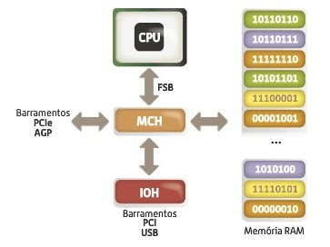
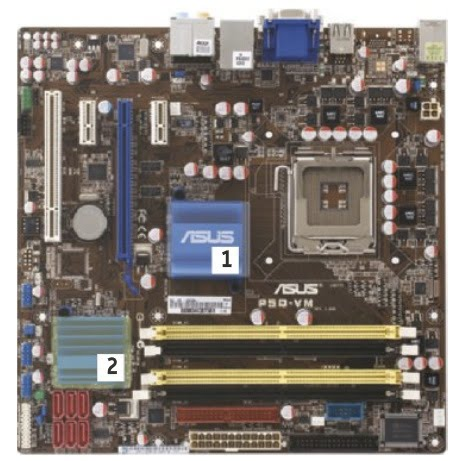
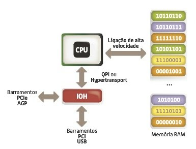
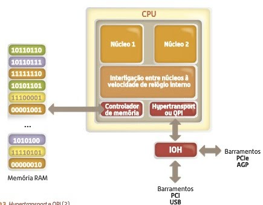
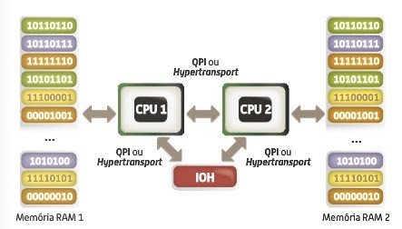

FSB representa a forma como um processador comunica com o exterior,isto é, com a North bridge, muitas vezes denominada como Memory Controller Hub presente na motherboard. Este foi introduzido pela primeira vez no Pentium Pro.
A MCH por sua vez, liga á South Bridge ou Input/Output Hub atraves de um barramento próprio. Numa motherboard convencional este foi chips são facilmente reconhecíveis.
O número 1 da figura representa o North Bridge e o número 2 a South Bridge. O Hypertransport foi lançado no AMD Athlon 64 pela primeira vez enquanto o QPI foi introduzido apenas recentemente na série Intel Core i7. vejamos as diferenças á arquitetura anterior.
Em maior pormenor, considerando agora o interior do microprocessador.
Essas tecnologias,revelam-se verdadeiramente importantes na vertente da escalabilidade,isto é, monstram-se muito eficazes em sistemas com vários processador, possuindo cada um o seu controlador de memória e ligação direta a cada um dos outros processadores.
A associação de vários processador é prática corrente no mundo dos servidores, onde estas tecnologias fazem toda a diferença.